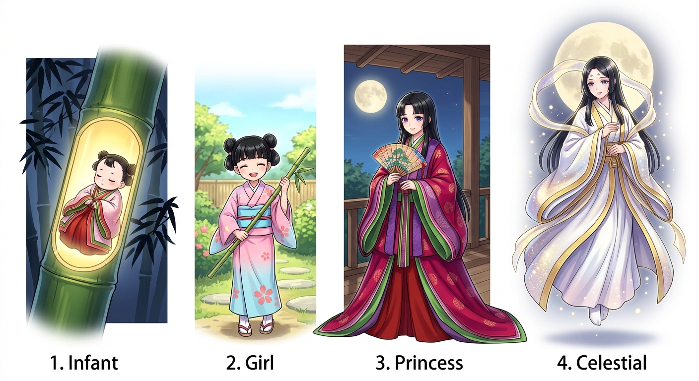

KAGUYA STAGE
竹の中に眠るかぐや姫
クリア率: 0 / 4 セクション

「すーすー…（竹の中で静かに眠っています）」
挑戦するセクションを選ぼう！
満点（7問全問正解）でクリアすると、かぐや姫が成長するよ✨
SECTION 1
第 1 / 7 問
現代仮名遣い（すべてひらがな）に直そう！
いふ
結果発表！
7 問中 7 問正解！
全セクション完全制覇！
✨ Congratulations! ✨
かぐや姫からの感謝メッセージ
「最後までいっしょにがんばってくれて、ほんとうにありがとうっ！✨」
「最初は竹の中でねむっていた私だけど、あなたが難解な歴史的仮名遣いをひとつずつ丁寧に解き明かしてくれたおかげで、こんなに素敵な天女の姿になることができました！」
「古文のことばって、最初はすこし難しく見えるかもしれないけれど、昔の人たちの気持ちや思いが詰まった宝箱なんだよ。あなたが学び抜いた知識は、これから先もあなたの力になってくれるはず！」
〜 あなたのことが大すきなかぐや姫より 🌸 〜